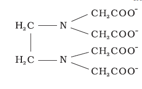
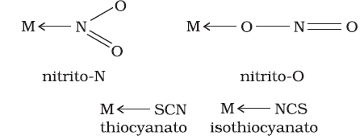
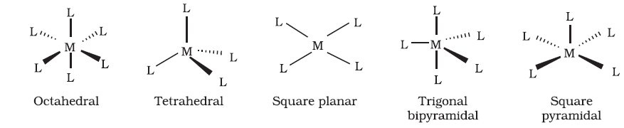

9.2 Definitions of Some Important Terms Pertaining to Coordination Compounds
(a) Coordination entity
A coordination entity constitutes a central metal atom or ion bonded to a fixed number of ions or molecules. For example, [CoCl3(NH3)3] is a coordination entity in which the cobalt ion is surrounded by three ammonia molecules and three chloride ions. Other examples are [Ni(CO)4], [PtCl2(NH3)2], [Fe(CN)6]4–, [Co(NH3)6]3+.
(b) Central atom/ion
In a coordination entity, the atom/ion to which a fixed number of ions/groups are bound in a definite geometrical arrangement around it, is called the central atom or ion. For example, the central atom/ion in the coordination entities: [NiCl2(H2O)4], [CoCl(NH3)5]2+ and [Fe(CN)6]3– are Ni2+, Co3+ and Fe3+, respectively. These central atoms/ions are also referred to as Lewis acids.
(c) Ligands
The ions or molecules bound to the central atom/ion in the coordination entity are called ligands. These may be simple ions such as Cl–, small molecules such as H2O or NH3, larger molecules such as H2NCH2CH2NH2 or N(CH2CH2NH2)3 or even macromolecules, such as proteins.
When a ligand is bound to a metal ion through a single donor atom, as with Cl–, H2O or NH3, the ligand is said to be unidentate. When a ligand can bind through two donor atoms as in H2NCH2CH2NH2 (ethane-1,2-diamine) or C2O42– (oxalate), the ligand is said to be didentate and when several donor atoms are present in a single ligand as in N(CH2CH2NH2)3, the ligand is said to be polydentate. Ethylenediaminetetraacetate ion (EDTA4–) is an important hexadentate ligand. It can bind through two nitrogen and four oxygen atoms to a central metal ion.
When a di- or polydentate ligand uses its two or more donor atoms to bind a single metal ion, it is said to be a chelate ligand. The number of such ligating groups is called the denticity of the ligand. Such complexes, called chelate complexes tend to be more stable than similar complexes containing unidentate ligands (for reasons see Section 9.8). Ligand which can ligate through two different atoms is called ambidentate ligand. Examples of such ligands are the NO2– and SCN– ions. NO2– ion can coordinate either through nitrogen or through oxygen to a central metal atom/ion. Similarly, SCN– ion can coordinate through the sulphur or nitrogen atom.

(d) Coordination number
The coordination number (CN) of a metal ion in a complex can be defined as the number of ligand donor atoms to which the metal is directly bonded. For example, in the complex ions, [PtCl6]2– and [Ni(NH3)4]2+, the coordination number of Pt and Ni are 6 and 4 respectively. Similarly, in the complex ions, [Fe(C2O4)3]3– and [Co(en)3]3+, the coordination number of both, Fe and Co, is 6 because C2O42– and en (ethane-1,2-diamine) are didentate ligands.
It is important to note here that coordination number of the central atom/ion is determined only by the number of sigma bonds formed by the ligand with the central atom/ion. Pi bonds, if formed between the ligand and the central atom/ion, are not counted for this purpose.
(e) Coordination sphere
The central atom/ion and the ligands attached to it are enclosed in square bracket and is collectively termed as the coordination sphere. The ionisable groups are written outside the bracket and are called counter ions. For example, in the complex K4[Fe(CN)6], the coordination sphere is [Fe(CN)6]4– and the counter ion is K+.
(f) Coordination polyhedron
The spatial arrangement of the ligand atoms which are directly attached to the central atom/ion defines a coordination polyhedron about the central atom. The most common coordination polyhedra are octahedral, square planar and tetrahedral. For example, [Co(NH3)6]3+ is octahedral, [Ni(CO)4] is tetrahedral and [PtCl4]2– is square planar. Fig. 9.1 shows the shapes of different coordination polyhedra.

Fig. 9.1: Shapes of different coordination polyhedra. M represents the central atom/ion and L, a unidentate ligand.
(g) Oxidation number of central atom
The oxidation number of the central atom in a complex is defined as the charge it would carry if all the ligands are removed along with the electron pairs that are shared with the central atom. The oxidation number is represented by a Roman numeral in parenthesis following the name of the coordination entity. For example, oxidation number of copper in [Cu(CN)4]3– is +1 and it is written as Cu(I).
(h) Homoleptic and heteroleptic complexes
Complexes in which a metal is bound to only one kind of donor groups, e.g., [Co(NH3)6]3+, are known as homoleptic. Complexes in which a metal is bound to more than one kind of donor groups, e.g., [Co(NH3)4Cl2]+, are known as heteroleptic.